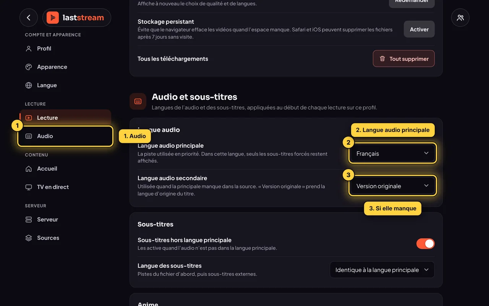
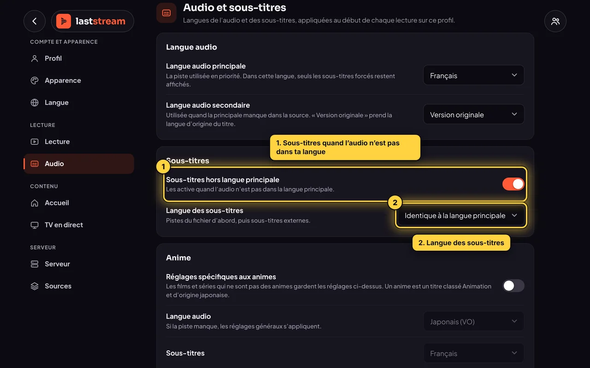
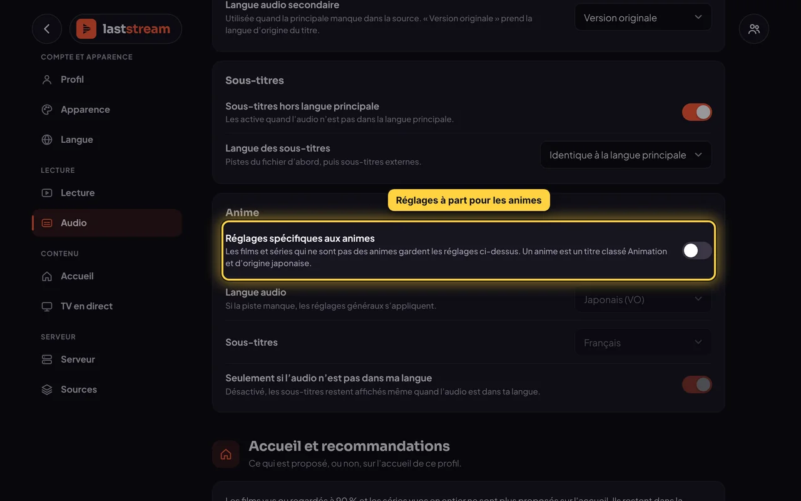

Étapes
Sur chaque capture, le cadre jaune montre où toucher ou cliquer ; les numéros donnent l’ordre.
-
Ouvre les « Réglages » (ton avatar en haut à droite), catégorie « Audio » (1). Choisis ta « Langue audio principale » (2), puis la « Langue audio secondaire » (3), utilisée quand la principale manque dans la source.

-
Active « Sous-titres hors langue principale » (1) pour avoir des sous-titres quand l’audio n’est pas dans ta langue, et choisis leur langue (2).

-
Pour les animes, active « Réglages spécifiques aux animes » : par exemple l’audio japonais avec des sous-titres français, sans toucher aux autres titres.
